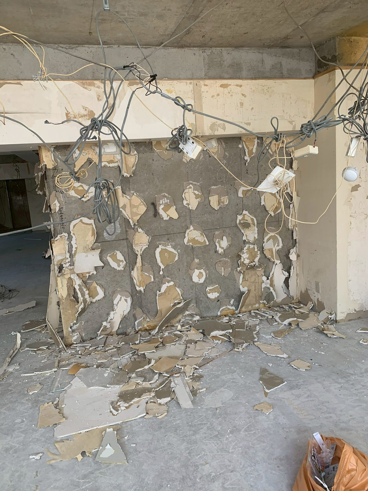
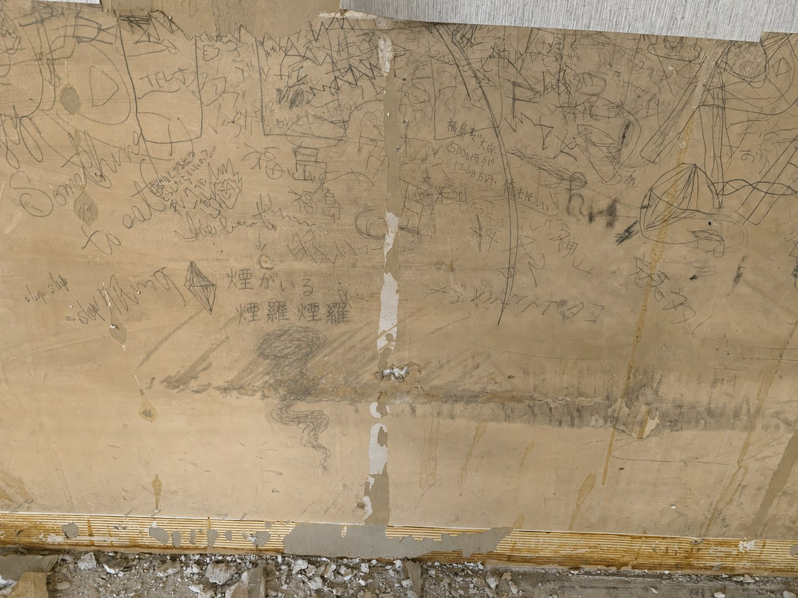

パネルを剥がし始めた。バールを壁に差し込んで、力技で外していく。思ったよりずっと頑固だった。端から攻めても、真ん中から攻めても、簡単には剥がれなかった。
音がうるさかった。静かだった場所が、急に騒がしくなった。
数枚剥がしたところで、本当の壁が出てきた。前のテナントの、そのまた前の、そのまた前の痕跡。重なった壁紙の跡、染み、何かを打ち付けた穴。この場所に積み重なってきたものが、パネルの裏に隠れていた。
三枚目を外したとき、煙の匂いがした。休憩中のタバコの残り香だろうか。誰も何も言わなかった。全員が少し、手を止めた。
気のせいだったと思う。たぶん。
本当の壁に煙羅煙羅と書いてあった。煙の妖怪らしい。店の名前は煙羅煙羅にすることにした。

